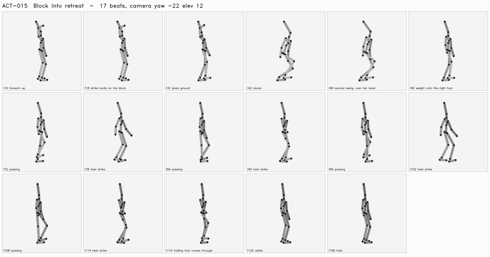

Block a strike, lose ground, duck the next strike and disengage.
Passes when: Both performers share event timing; retreat remains spatially possible.
| frame | who | beat |
|---|---|---|
| 16 | Bola | forearm up |
| 18 | Shim | strike lands on the block |
| 32 | Bola | gives ground |
| 42 | Bola | ducks |
| 48 | Shim | second swing, over her head |
| 66 | Bola | weight onto the right foot |
| 72 | Bola | passing |
| 78 | Bola | heel strike |
| 84 | Bola | passing |
| 90 | Bola | heel strike |
| 96 | Bola | passing |
| 102 | Bola | heel strike |
| 108 | Bola | passing |
| 114 | Bola | heel strike |
| 119 | Bola | trailing foot comes through |
| 125 | Bola | settle |
| 189 | Bola | hold |
| 189 | Shim | hold |

Thresholds come from the spec's crash_lab_checks and are read by the verdict, not restated beside it. A check that did not run says so; a blank is not a pass.
different heights · second attacker · obstacle